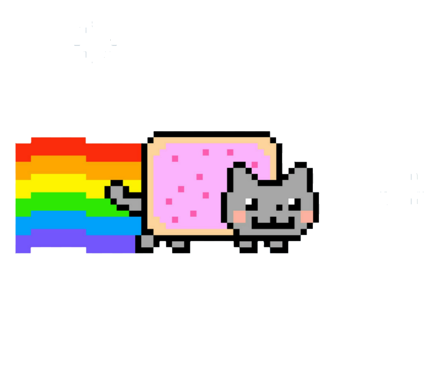

YOUR PERSONAL WEB DESK
Keep the good stuff.
Bookmarks, tools, and little things worth coming back to.
⌕
Nothing here yet.
YOUR PERSONAL WEB DESK
Bookmarks, tools, and little things worth coming back to.
Nothing here yet.
